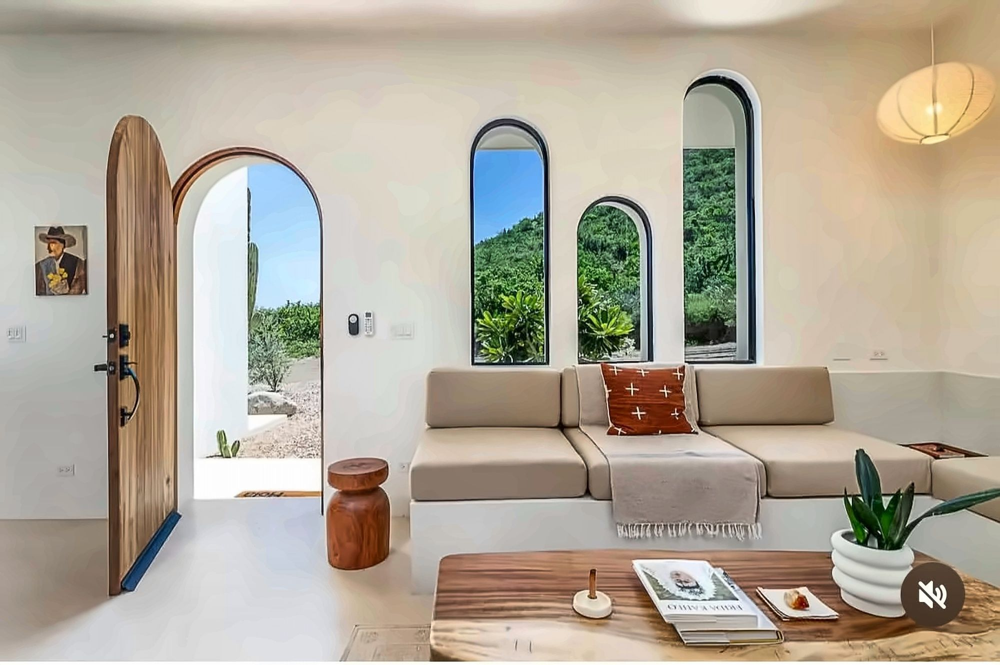
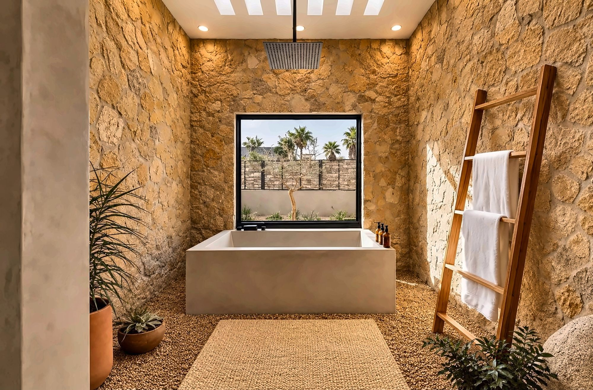
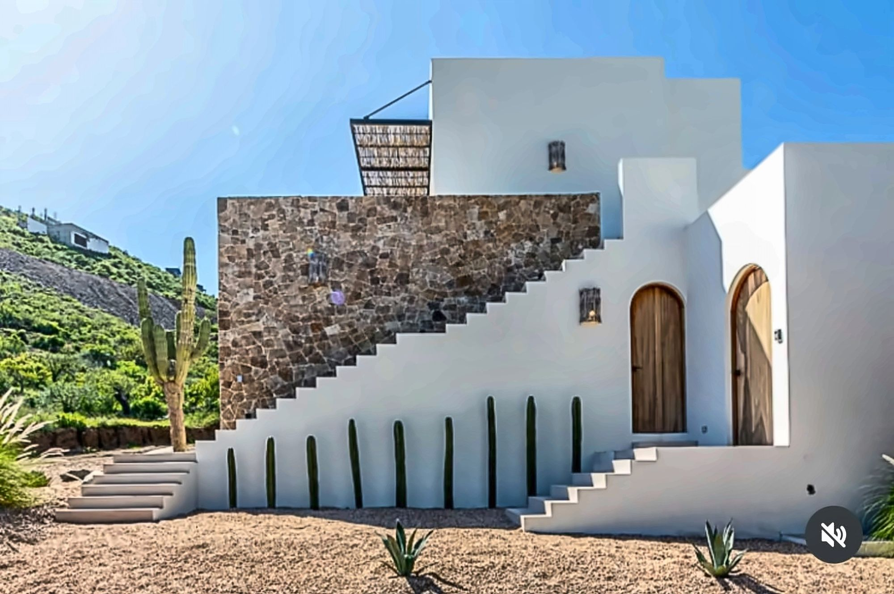
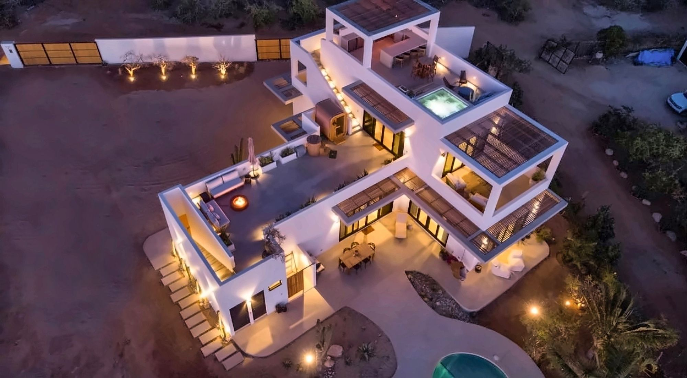
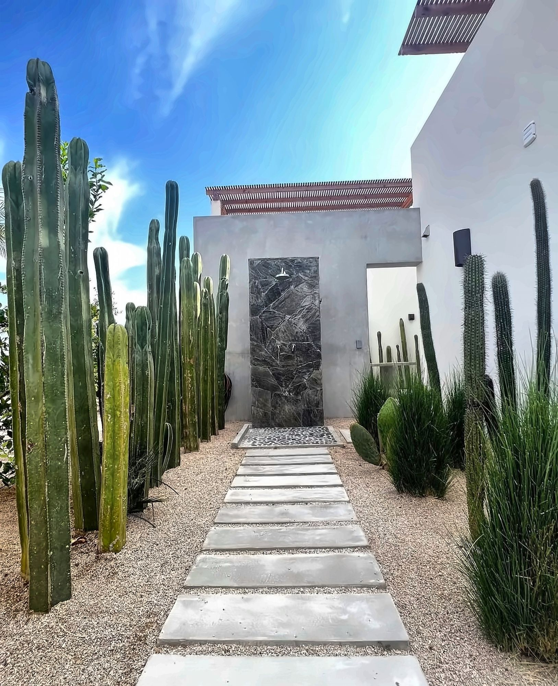
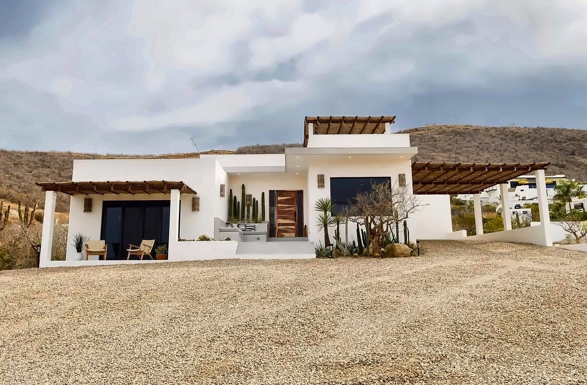
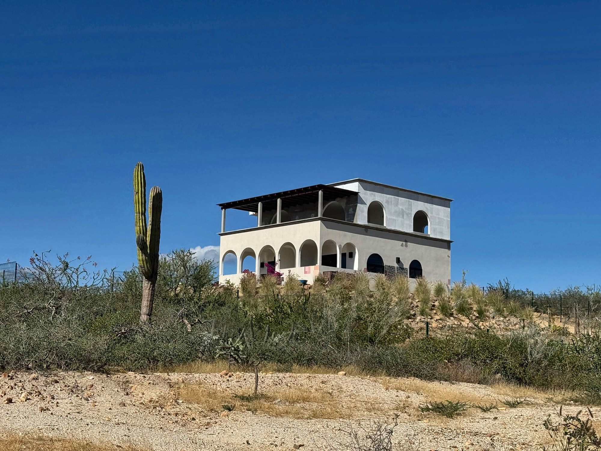
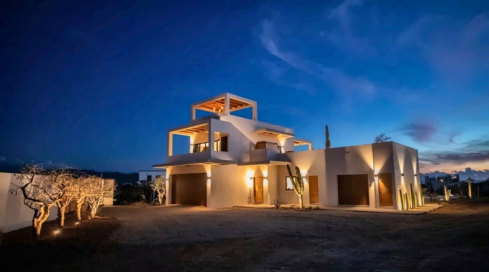
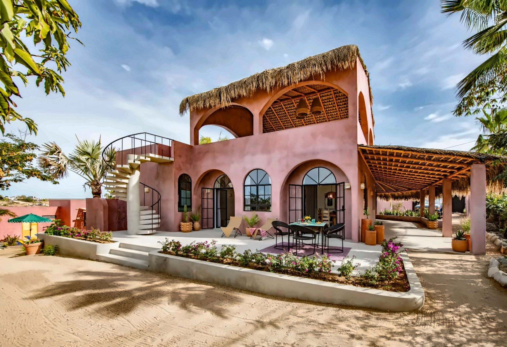

Since [YEAR] · Todos Santos, B.C.S.
We build homes that belong to the desert and the Pacific — from the first footing to the final finish.
Local stone, hand-finished plaster, parota and light. Every house is made to the architect's intent and the owner's life, with the builder on site, every week.
Our story

Costa Etérea
[Zone] · Stone walls, sculpted tub, sunken living room

Casa Burson
[Zone] · Stone stair wall, arched openings

Casa Salomón
[Zone] · Stepped terraces, rooftop plunge pool

Casa Baker
[Zone] · Desert garden entry, patterned tile

Casa Nathan
[Zone] · Carrizo ceilings, parota doors
Built for the coast

Salt, sun and wind
Materials and details chosen to age well on the Pacific.
Water, solved
Cisterns and filtration designed in from day one.
Local materials
Regional stone, plaster and hardwoods, worked by local hands.
Our own equipment
Site work on our schedule, not someone else's.
One team from the lot to the keys — so you can build from anywhere.
01
Site & feasibility
We walk the lot with you before a line is drawn.
02
The right architect
We connect you with designers we've built with.
03
Budget & schedule
A clear scope, timeline and payment plan.
04
The build
Permits to finishes, with regular progress updates.
05
Keys & care
A finished, furnished-ready home — and we stay close.

Ismael Uribe has been building in Todos Santos for [X] years. He's demanding, direct, and on site every week — and a small plaque with this mark is how he signs his work.
“[A line from Ismael, in his own words.]”
Equipment rental
[Equipment list — e.g. backhoes, excavators, compactors] across Todos Santos, Pescadero and Cerritos. With operator on request.
In their words
“[Client testimonial.]”
“[Architect testimonial.]”
“[Client testimonial.]”

Tell us about your lot and what you have in mind. We'll take it from there.